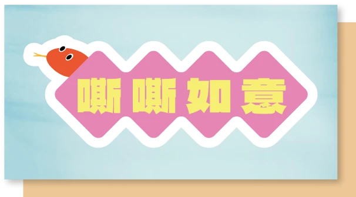
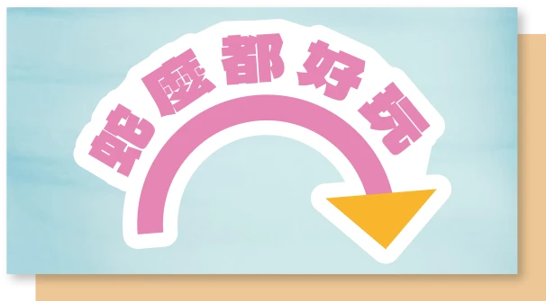
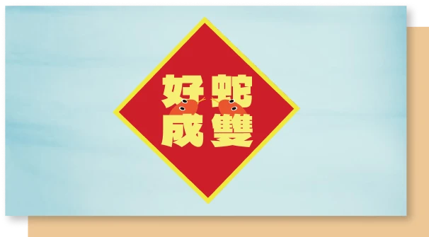
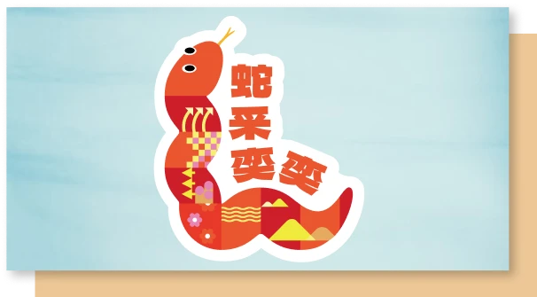
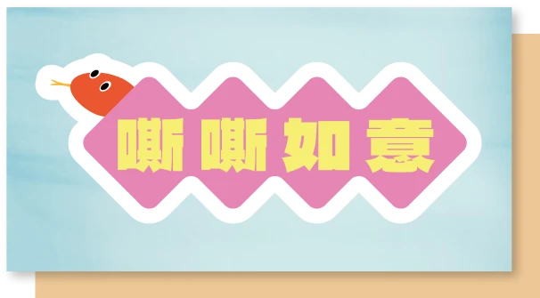
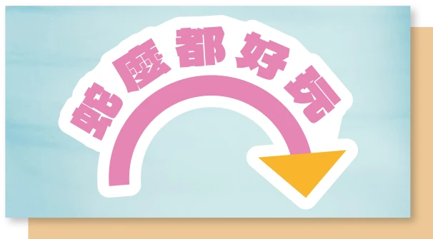
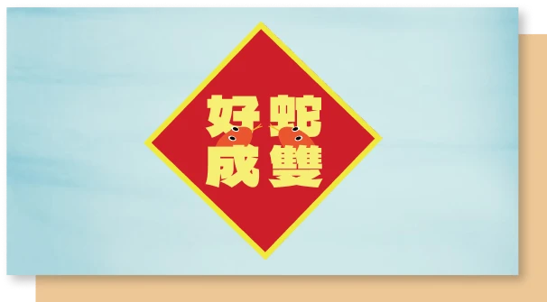
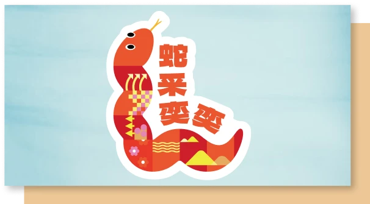

「蛇」采奕奕
迎新年
1/22(二)-1/27(一)
財蛇到~迎新送舊拿貼紙
與可愛的蛇年貼紙一起迎新年
活動期間，前往新北藝文場館*，在自己的社群平台寫下「我在@(所屬館舍名稱) 送大龍迎小龍，蛇采奕奕迎新年」，就能於服務台領取蛇年貼紙乙份。每日每館數量有限，送完為止。快來加入新北文化走春行列，一整年都要蛇采奕奕。
*十三行博物館、淡水博物館、鶯歌陶瓷博物館、黃金博物館、茶業博物館、林本源園邸、新北市美術館、新北市立圖書館總館、府中15、板橋435藝文特區、空軍三重一村、新北市藝文中心、新莊文化藝術中心。
 








蛇年爬爬走
文化走春趣
1/30(四)~2/2(日)初二~初五
博物館走春，與金蛇一起拍照
彩虹蛇蛇包帶回家！
活動期間，在新北各大博物館*，拿著蛇蛇拍照手拿板，擺出運動姿勢拍照，也可錄製動動特效，打卡所在館舍位置；或直接出示當日博物館內消費發票**，即可兌換限量的彩虹蛇蛇包，每日數量有限，快把新北博物館安排進過年行程中。
*十三行博物館、淡水博物館、鶯歌陶瓷博物館、黃金博物館、茶業博物館、林本源園邸。
**不限金額、不含門票。
打卡許願換徽章
新年願望一次實現！
在新北各大博物館內打卡「我在@(所屬館舍名稱) 許下新年願望」即可兌換新北博徽章，每日每館限量，送完為止。帶著你的願望，一起迎接美好蛇年。
過年要去哪裡玩?
各館活動超豐富!
過年期間，新北各藝文場館每天都有多種不同的展演、DIY體驗活動，不論你是想看魔術、聽音樂、玩繪本，新北博物館都幫你準備好了。還有各種專屬禮品和大小驚喜，等你來發現，讓你初二玩到初五，天天都要文化走春。
蛇來蛇去十三動一動
新北市立十三行博物館
除夕、初一休館
春節假期開放時間09:30-18:00
蛇麼都好運
新北市立黃金博物館
除夕、初一休館
春節假期開放時間09:30-18:00
2025「春遊淡古，蛇咪攏有」新春系列活動
新北市立淡水古蹟博物館
除夕、初一休館
春節假期開放時間09:30-18:00
「金蛇陶喜」-2025陶博館春節系列活動
新北市立鶯歌陶瓷博物館
初二起開館
09:30-18:00
luā-luā-sô 樂樂蛇
新北市美術館
1/30-2/2 初二至初五
10:00-17:00
2025蛇來運轉迎新春
林本源園邸
農曆除夕、年初一休館
初二起開館 09:00-17:00
嘶嘶如意好運蛇進來
坪林茶業博物館
初二起開館 週一至週五 09:00~17:00
週六及週日 09:00~17:30

蛇來蛇去～蛇到435訪春神
板橋435藝文特區
除夕、初一休館
春節假期開放時間 09:00-18:00
yes，蛇 ! 花生蛇麼事?
府中15
除夕、初一休館
春節假期開放時間 09:30~17:00
123
空軍三重一村
春節期間無休館
春節假期開放時間 10:00-18:00
2025金蛇百倍 閱好年
新北市立圖書館(總館)
除夕至初四休館
小年夜、初五 開放時間為
08:30-17:00

新北博物館
「蛇」麼都好玩
2/3(一)-2/12(三)
五條美學廊帶
帶你玩轉新北！
踏上五條精心設計的美學路線，從藝術到自然、從文化到探索，旅途中每一站都是新春的驚喜！用心感受豐富的視覺、聽覺、觸覺體驗，讓這個假期不只熱鬧，更充滿創意與美感的共鳴！
蛇采奕奕品三鶯
嘶嘶入扣觀陶藝
金蛇迎春踏金九
招財進寶淘金趣
蛇舞坪林串古道
闔家行春走茶山
古今中外訪滬尾
蛇來運轉遊八里
古蛇古香遊林園
好蛇成雙走春趣
快閃留言抽好禮
新春驚喜送上門！
2月8日至2月9日，到文化局粉專指定貼文留言「新北博物館，蛇麼都好玩」並TAG兩位好友，有機會成為幸運兒，獲得限量新年文宣品！